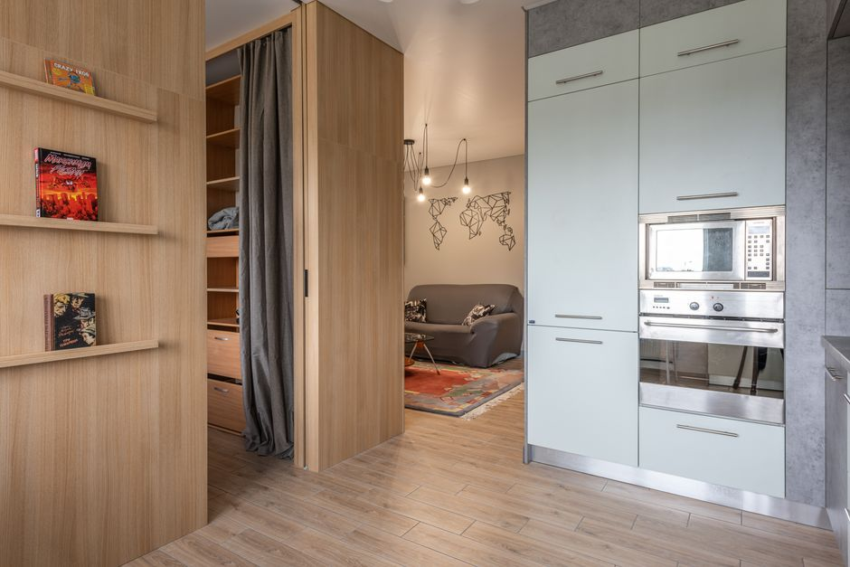

Hidden Storage Solutions Using Curtains: A Clever Space-Saving Hack

Photo: Max Vakhtbovych / Pexels
If you're short on storage space in your home, consider using curtains to create hidden storage areas. This clever trick can help you maximize the space in even the smallest rooms, whether it's a closet, a laundry room, or a guest bathroom. Here’s how to turn your curtains into an efficient storage solution.
Materials Needed
- Matching curtains: Choose curtains that match your decor to ensure they blend seamlessly into your space.
- Curtain rods: Install at least one rod, or use a rod pocket curtain with a hidden storage panel.
- Hooks and clips: For hanging items like purses or accessories.
- Drawstring or velcro: Optional, for an extra layer of closure.
Step-by-Step Guide
Photo: Max Vakhtbovych / Pexels
Step 1: Assess Your Space
Measure the width and length of the area where you plan to install the curtains. Ensure there is enough space to accommodate a curtain rod and the curtains themselves. A standard curtain width is about 60 inches, and a height of 72 inches works well for most spaces.
Step 2: Install the Curtain Rod
Install the curtain rod at the desired height, making sure it is securely attached to the wall. For a more subtle look, consider installing the rod behind the wall, using a hidden rod holder.
Step 3: Choose the Right Curtains
Select curtains that are slightly longer than the rod to create the illusion of a longer storage area. Opt for blackout curtains if you want to keep light out, or sheer curtains for a more elegant look.
Step 4: Create a Hidden Storage Panel
For a more organized look, use a curtain with a hidden storage panel. Fold the fabric over to create a pocket where items can be stored. You can also use a drawstring or velcro closure to secure the storage area.
Step 5: Add Hooks and Clips
Install hooks and clips on the back of the curtains to hang items like handbags, keys, or scarves. Place them strategically to avoid creating clutter.
Practical Examples
Example 1: Master Closet
In a master closet, you can use a curtain with a hidden storage panel to keep seasonal clothing or out-of-season accessories out of sight. Install the curtain on one side of the closet, leaving the other side for easy access. Use hooks and clips to hang shoes and belts.
Example 2: Laundry Room
In a laundry room, use a curtain to separate the area for folding and ironing from the rest of the room. Install a curtain with a hidden storage panel to store cleaning supplies, towels, or extra bedding.
Tips and Tricks
- Regularly Organize: Check the hidden storage areas every six months to ensure items are still needed and to keep the space tidy.
- Labeling: Use clear labels to identify what’s stored in each pocket, especially if you have multiple storage areas.
- Color Coding: Use different colored hooks and clips to organize items like work clothes versus personal items.
Conclusion
Using curtains to create hidden storage areas is a practical and stylish solution for maximizing space in your home. By following these steps, you can turn your curtains into a functional and attractive storage solution. Whether you’re short on closet space or looking for a way to keep your laundry room organized, this clever hack can help you achieve a neat and tidy home.

Recommended products
As an Amazon Associate, I earn from qualifying purchases.